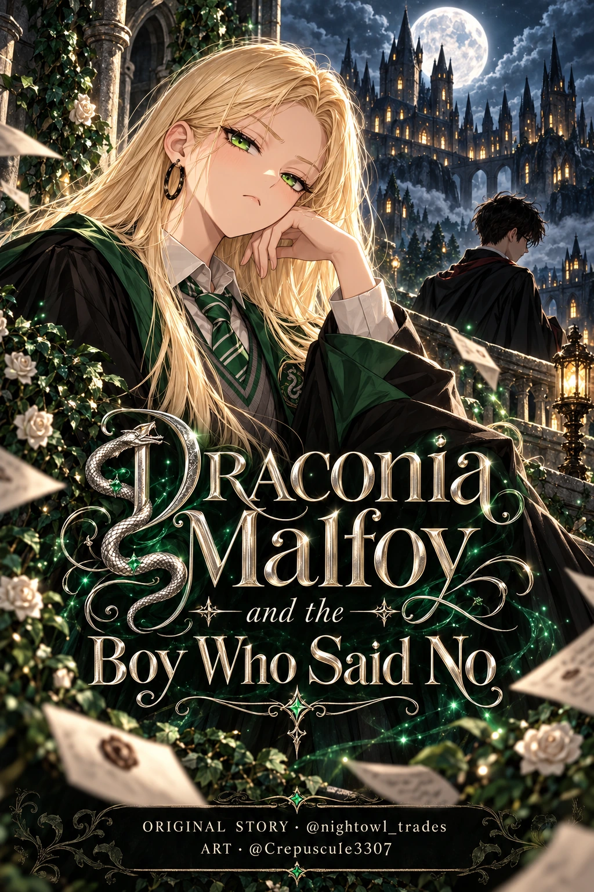

AN ENGLISH COMIC ADAPTATION
Draconia Malfoy
and the Boy
Who Said No
Some stories begin with a spell.
This one begins with a girl who had never
been told no.

THE COLLECTION
One chapter at a time.
YEAR ONE 4 CHAPTERS
Available through Chapter 2.1. More chapters will be added by the artist.
BEHIND THE COMIC
There is more between the lines.
Read the original story by nomoontwo_ on Wattpad.
Visit the original story